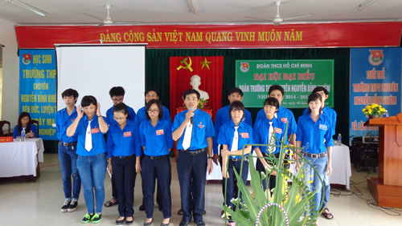
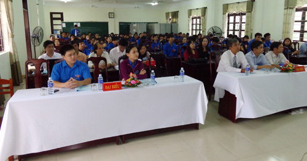
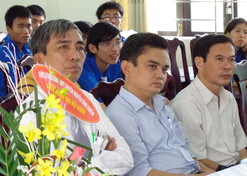
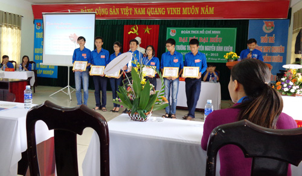
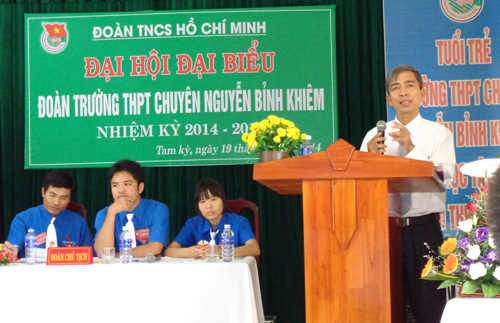
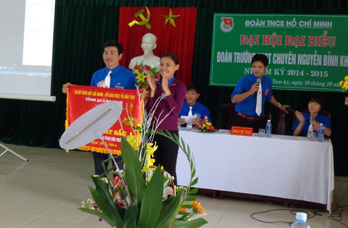

Đại hội Đoàn trường THPT chuyên Nguyễn Bỉnh Khiêm nhiệm kỳ 2014 -2015

Lần cập nhật cuối lúc Thứ năm, 30 Tháng 10 2014 10:56 Viết bởi Administrator Thứ năm, 30 Tháng 10 2014 10:32
Nhằm đánh giá kết quả hoạt động năm học qua, đề ra phương hướng cho năm học đến, đồng thời sáng suốt lựa chọn những đồng chí có uy tín, đủ đức, đủ tài bầu vào BCH Đoàn trường nhiệm kỳ 2014 - 2015;

sáng ngày 19/10/2014, Đoàn trường THPT chuyên Nguyễn Bỉnh Khiêm long trọng tổ chức thành công Đại hội Đại biểu Đoàn TNCS Hồ Chí Minh trường THPT chuyên Nguyễn Bỉnh Khiêm nhiệm kỳ 2014-2015.
Đại hội đã vinh dự đón tiếp đồng chí Nguyễn Thị Ly, Phó bí thư Thành Đoàn - Thành phố Tam Kỳ về tham dự; về phía lãnh đạo nhà trường có thầy Hiệu trưởng Lê Nguyên Bảng, thầy Phan Văn Chương Phó Hiệu trưởng đại diện cho Ban giám hiệu nhà trường; cô Hồ Thị Thúy Hằng Chủ tịch Công Đoàn, thầy Trương Văn Quang thay mặt cho Chi bộ nhà trường; ông Nguyễn Hữu Ánh Đại diện Ban cha mẹ học sinh cũng đến tham dự; Đại hội cũng vinh hạnh được đón tiếp và nhận hoa chúc mừng của Đoàn trường THPT Trần Cao Vân, THPT Phan Bội Châu, Đoàn Phường Tân Thạnh… Cùng với 70 đồng chí Đoàn viên thay mặt hơn 600 học sinh của trường về dự Đại hội.


Đại biểu về tham dự Đại hội
Đại hội đã tiến hành đánh giá kết quả thực hiện Nghị quyết Đại hội nhiệm kỳ 2013 - 2014 đồng thời cũng có nhiếu ý kiến đóng góp cho phương hướng, nhiệm vụ công tác Đoàn và phong trào thanh niên trường trong nhiệm kỳ 2014 - 2015. Đại hội đã thống nhất khẩu hiệu hành động cho nhiệm kỳ mới “Học sinh trường THPT Chuyên Nguyễn Bỉnh Khiêm rèn đức, luyện tài vì ngày mai lập nghiệp”.

Những tập thể xuất sắc trong năm học vừa qua 2013 - 2014
Trong nhiệm kỳ qua, Đoàn trường đã tổ chức nhiều hoạt động thiết thực mang tính giáo dục, nâng cao trình độ nhận thức, kết quả dạy và học. Đồng thời, Đoàn trường cũng đẩy mạnh các hoạt động văn hóa, văn nghệ, thể dục thể thao nhằm tạo sân chơi, cũng như môi trường phát triển toàn diện cho đoàn viên của trường.
Thầy Lê Nguyên Bảng - Hiệu trưởng nhà trường đã phát biểu và biểu dương những kết quả thành tích xuất sắc mà Đoàn trường trong nhiệm kỳ qua đã được Sở Giáo dục và Tỉnh Đoàn Quảng Nam tặng cờ và giấy khen đạt thành tích tiêu biểu trong công tác Đoàn và phong trào Thanh niên trong trường học.
Thầy Hiệu trưởng Lê Nguyên Bảng lên phát biểu chỉ đạo
Đồng chí Nguyễn Thị Ly - Phó Bí thư Thành Đoàn đánh giá cao kết quả BCH Đoàn trường nhiệm kỳ 2013-2014 đã làm được. Đồng chí cũng lưu ý, nhấn mạnh một số vấn đề trong công tác tổ chức, mà trọng tâm là các hoạt động phong trào gắn liền với việc bồi dưỡng lý tưởng, nâng cao nhận thức; phát huy hơn nữa trí tuệ và tinh thần tập thể, khắc phục những hạn chế, từng bước đưa công tác Đoàn và phong trào thanh niên tại đơn vị vươn lên xứng tầm với sự tin tưởng của các cấp lãnh đạo.
Đồng chí Nguyễn Thị Ly - Phó bí thư Thành Đoàn Tam Kỳ trao cờ Tập thể Xuất sắc công tác Đoàn năm học 2013 - 2014
Đại hội lần này đã bầu 15 đồng chí vào BCH Đoàn trường nhiệm kỳ 2014 -2015. Đồng chí Châu Văn Thọ giữ chức vụ Bí thư Đoàn trường, đồng chí Nguyễn Xuân Tùng và đồng chí Võ Châu Hoàng Long giữ chức vụ Phó Bí thư Đoàn trường nhiệm kỳ 2014-2015.
15 đồng chí vào BCH Đoàn trường nhiệm kỳ 2014 -2015
Năm học 2014 – 2015 là năm học có ý nghĩa đặc biệt, chúng ta có rất nhiều thời cơ cùng những điều kiện thuận lợi, nhưng cũng đối mặt với không ít khó khăn thách thức. Để thực hiện thắng lợi các chỉ tiêu, nhiệm vụ đặt ra đòi hỏi BCH Đoàn trường, BCH các Chi đoàn và mỗi Đoàn viên thanh niên cần phải nêu cao ý thức trách nhiệm, nhiệt tình gương mẫu trong mọi công việc được giao.
Dưới sự lãnh đạo của Chi bộ, BGH, sự phối hợp chặt chẽ và tạo điều kiện thuận lợi của các tổ chức đoàn thể khác trong và ngoài nhà trường, đặc biệt là Giáo viên chủ nhiệm, sự quan tâm chỉ đạo của Ban thường vụ Thành đoàn, Tỉnh đoàn Quảng Nam; Đoàn trường THPT chuyên Nguyễn Bỉnh Khiêm quyết tâm hoàn thành xuất sắc nhiệm vụ đã đề ra, góp phần thực hiện thắng lợi nhiệm vụ chính trị chung của nhà trường, xứng đáng với vai trò và vị thế của tổ chức Đoàn ở một trường THPT chuyên và là trung tâm đào tạo chất lượng cao của ngành GD& ĐT tỉnh Quảng Nam.
- 29/04/2015 16:09 - Đội tuyển HSG môn lịch sử Quảng Nam đạt tỉ lệ giải…
- 01/04/2015 19:46 - Hướng dẫn tổ chức thi THPT quốc gia và xét công n…
- 05/02/2015 13:54 - Kết quả kỳ thi chọn học sinh giỏi quốc gia lớp 12 …
- 10/12/2014 00:00 - Từ chuyến đi Hội thảo Vĩnh Phúc
- 13/11/2014 07:42 - Trường THPT chuyên Nguyễn Bỉnh Khiêm - Quảng Nam t…
- 05/09/2014 00:00 - Trường THPT chuyên Nguyễn Bỉnh Khiêm tổ chức lễ kh…
- 15/03/2014 08:05 - Kết quả chung kết hùng biện Tiếng Anh tại trường T…
- 24/01/2014 11:42 - Kết quả kỳ thi học sinh giỏi quốc gia năm học 2014
- 08/12/2013 14:43 - Lịch kiểm tra học kỳ I năm học 2013-2014
- 05/12/2013 14:51 - Tổng hợp một số chuyên đề các môn chuyên của các t…